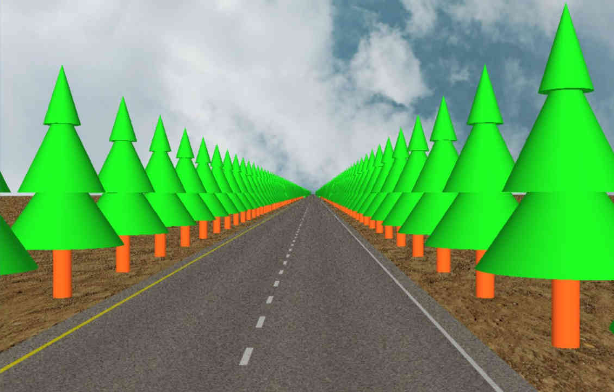
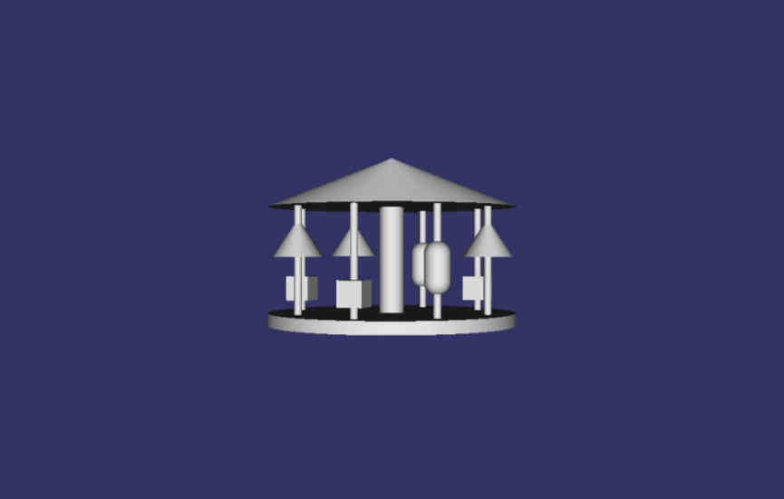
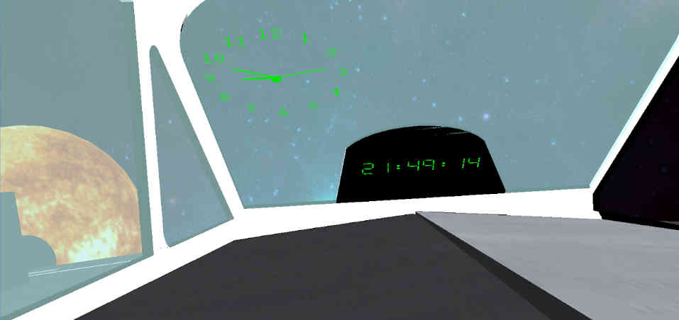
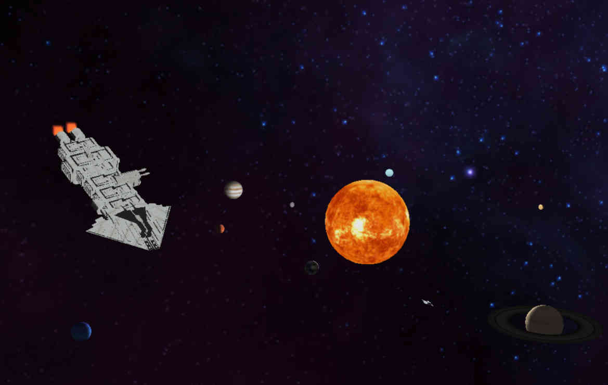
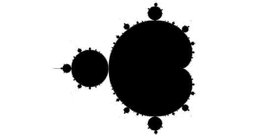
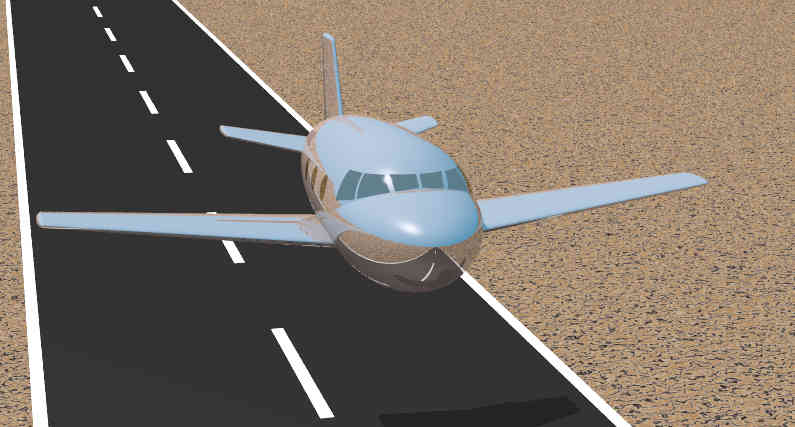
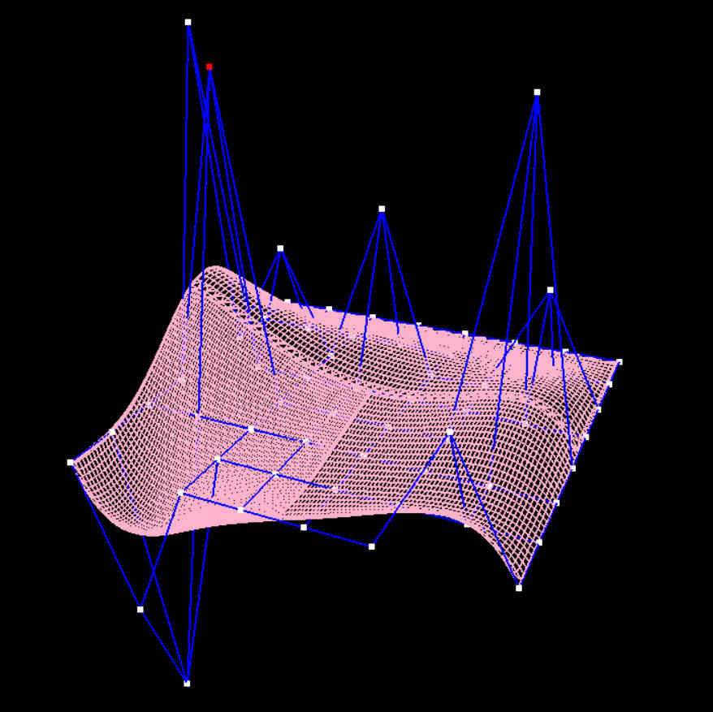
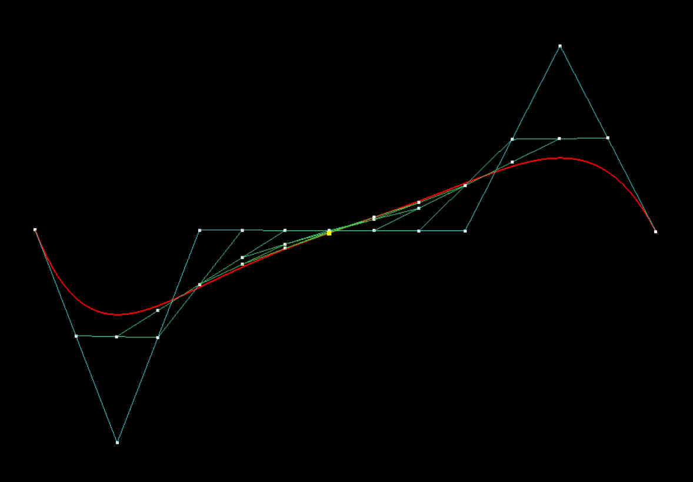
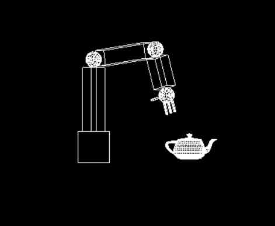

Carretera con árboles a los lados. Mediante niveles de detalles (LOD) se utilizan modelos con más o menos detalle para estos árboles y así ahorrar cómputo. Familiarizandose con el uso de grafos de escena en Open Scene Graph con la carretera y un tiovivo animado.


Sistema Solar como excusa para implementar dos relojes con Open Scene Graph, uno analógico y otro digital. Los relojes se encuentran en una pequeña nave.


Implementación en OpenGL de diferentes fractales: Curva de Koch, Triángulo de Sierpinski y Mandelbrot.

Iluminación global mediante trazado de rayos y radiosidad con POV-Ray. Modelado con Geometría Sólida Constructiva (CSG).

Superficie creada con Nurbs a partir de puntos de control y curvas siguiendo el algoritmo de De Casteljau. Para ello se ha utilizado OpenGL.


Brazo robotico con OpenGL. Las partes del brazo son extensibles, rotables en las articulaciones y puede agarrar la tetera cuando la mano se encuentra encima de ella. Además, se puede disparar una bola en la dirección que mira la mano robótica.

Pixel Shader con OpenGL y GLSL. El shader recrea una iluminación estilo cartoon. Para ello se han establecido rangos de ángulos entre la cámara y las normales del objeto para usar diferentes colores dependiendo del rango en el que se encuentre la normal de cada pixel.